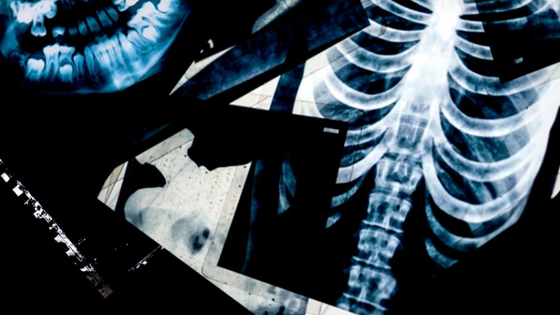
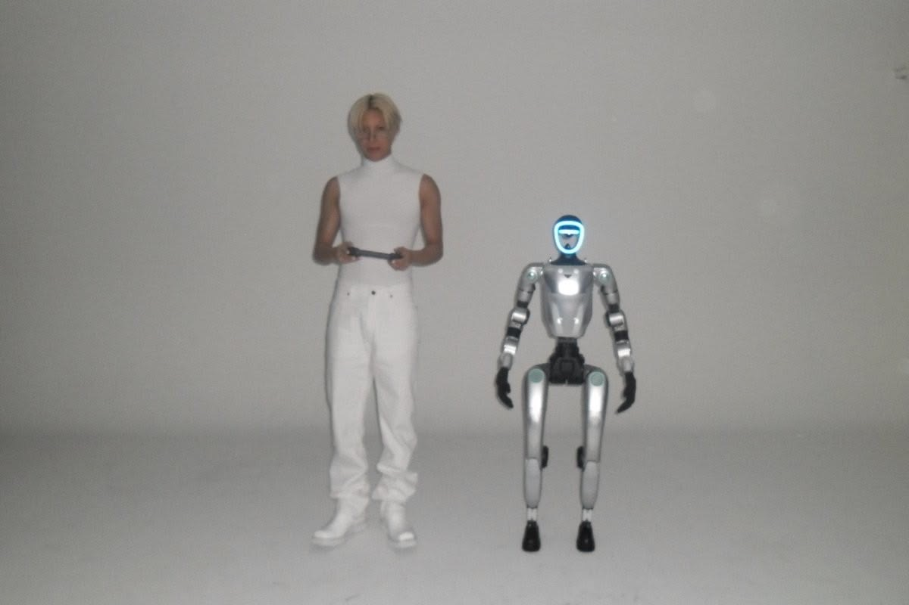

Mireille treats his body as an artistic medium. His interest in fashion extended into physical modification, using cybernetic components to create the proportions and features he envisioned. He continues to develop his design through new procedures.
Dossier
The Body He Made
Artificial Eyes
His eyes are artificial, built into the structure of his face. They adjust to darkness, detect cameras and magnify distant objects. He can track movement across a room and recognize faces from a considerable distance. Every so often, a brief mechanical twitch gives away the machinery beneath their otherwise seamless appearance.
Internal Structure

Sensory filaments beneath his skin connect directly to his nervous system. They allow him to detect electrical signals, isolate voices and register physiological changes in nearby people. He has made a habit of monitoring others, often studying their reactions without their knowledge.
Cybernetic Devices

His processing system can only handle a limited amount of incoming data. Excessive sensory input can trigger neural feedback, causing visual distortion, loss of motor control and, in severe cases, a complete shutdown. During these episodes, he enters a dormant state until his systems can be restored. If he becomes unresponsive, an emergency beacon transmits his coordinates to Théoden's device. Essentially, Find My iPhone for a cyborg.